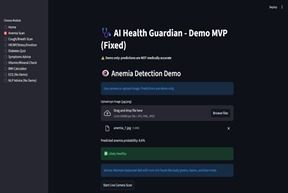
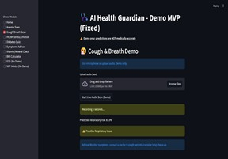
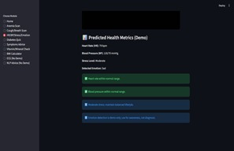

Offline AI-powered health scanner (demo). Predicts anemia, heart rate/BP (rPPG), cough/breath risk, stress, and nutrition risk.
Demo only — not medically accurate yet.
🌍 Mission & Vision
- Mission: Empower humanity with AI-driven health insights — offline, real-time, and accessible everywhere.
- Vision: Future 99.99% medically accurate AI assistant — free, global, used in space & undersea. Courage and obsession… then no one has the dare to stop me 🚀

Rifah Tasnia Orthi
Founder & CEO — AI Health Guardian
“I lost my childhood in a toxic environment — so I dedicated my life to building a world where no child is left behind.
Courage and obsession can beat anything — and no one has the dare to stop me.”
Email
LinkedIn
Website
🎯 MVP Features
- 🩸 Anemia detection from eye and facial scans
- 💓 Heart rate & blood pressure estimation via rPPG
- 😷 Cough & breath sound analysis
- 🧠 Emotion & stress level recognition
- 🩺 Lifestyle & nutrition quiz (diabetes & vitamin deficiency)
🖼️ MVP Demo



⚡ Key Features
- Offline & Lightweight — works anywhere
- Multimodal AI Scan — vision + audio + quiz
- Early Health Detection — anemia, BP, stress, cough
- Expandable — remote monitoring & future sensors
- Future Vision — fully accurate AI medical assistant
🔗 Contact & Links